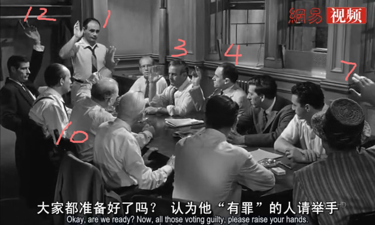

12 Angry men

基本信息
警告：
以下文字涉及剧情描述，不建议在观影前阅读。
我在想，这类片子应该是女性们最不爱看的影片了吧，既没有小鲜肉，也没有花美男，甚至连色彩都没有。影片唯一的场地就是一间待满了中老年男人并充满汗臭的房间，外挂一个卫生间。放到现在连情景喜剧都不敢这么拍。这个房间里没有空调，连唯一的风扇也“坏了”。是的，你没有看错，五十年代就有空调了，在那个中国人民还在一穷二白埋头努力搞建设的年代，毕竟那里是美国。这是一年中气温最高的一天，而且潮湿闷热，绅士们的穿着都很得体，西装革履、长袖衬衣，有的还戴着帽子来的。假如不是剧情的刻意要求的话，我想那就只有一个原因——就是当时纽约夏季的最高气温远比现在要低很多。一个局部地区气候变化的例子在老电影中得以佐证，还真是凑巧啊。喜欢较真的同学可以去查询下历史天气数据，以安抚下我这颗喜欢胡思乱想的心。
暴雨来临之前的压抑，会让人愈加烦躁，夏季高温更易上火，怕上火，就喝嘉多宝，实在不行，还有王老吉！当人与人之间的心火上升到临界点，情绪极容易失控，甚至做出一些丧失理智的事情来，这样的日子并不适合讨论案情，特别是一宗一级谋杀案。所有的证词都对被告不利，所有的证据似乎都足以让外界盖棺定论，从流程上只剩陪审团的十二个成员一致通过了。
但是，看起来像是铁证如山的案情还是被推翻了。
看了许多影评，都强调主角1对11，一个打了十一个，比叶师傅还多打了一个。这无疑给主角塑造了一种孤胆英雄力挽狂澜的形象，又重新看过影片N遍之后，我否定了这种看法。理由如下，请看如下一张截图。

这是首次举手投票的场景，如果留心观察，并不是想像中的十一只手同时举起。最先举手的是我在图中标出序号的六个人。这表明只有这六个坚定认为被告有罪。后面五个人，是在看到前面六个人举手之后，才依次举起了手，而最后举手的，恰恰正是坐在主角旁边的那个老头。所以剧情早在第一次举手表决时就埋下了伏笔。
再来看看，最先举手的六个人中，其中七号和十二号两个人心不在焉，一个老是想着晚上八点的橄榄球赛，总想着早点结束走人。另一个则在讨论案情的时候和人聊天，心思也没在案子上，所以这两票其实算得上是两张废票，也就是说他们随时有可能随大流地倒向另一方。另外为了以示公正，他们被锁在这间房子里，直到所有的人一致通过，有罪或是无罪的判决（不排除有可能在此过夜）。两个人的心思都没在案子上，都是来打酱油的。所以其实有罪派的实力并不是铁板一块，至少没有想像得那么牢固。